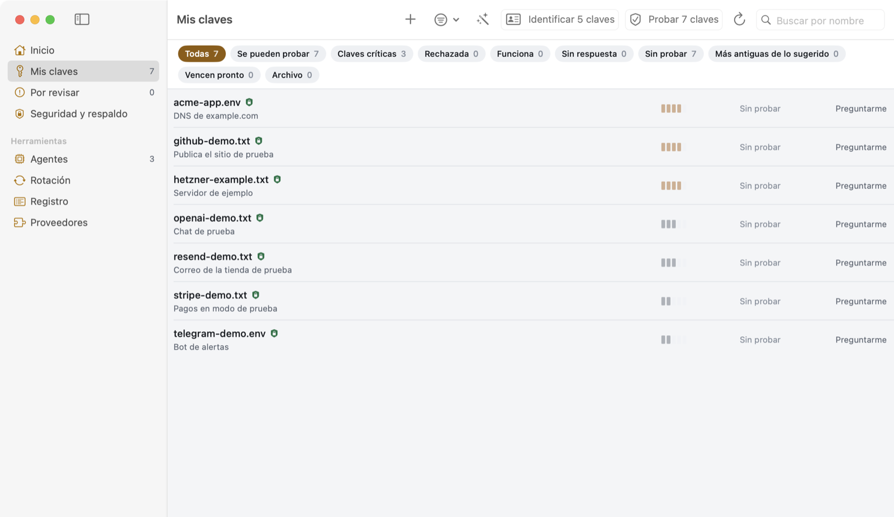
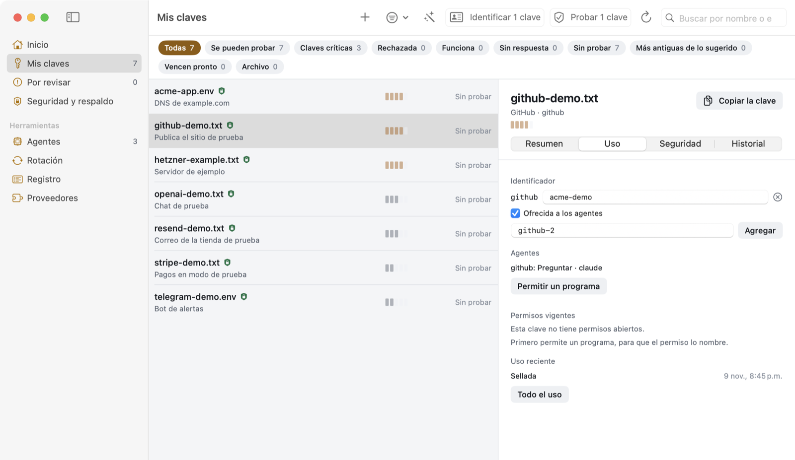
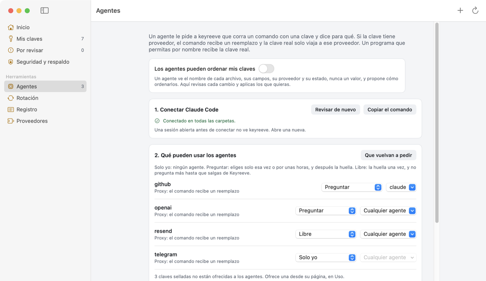
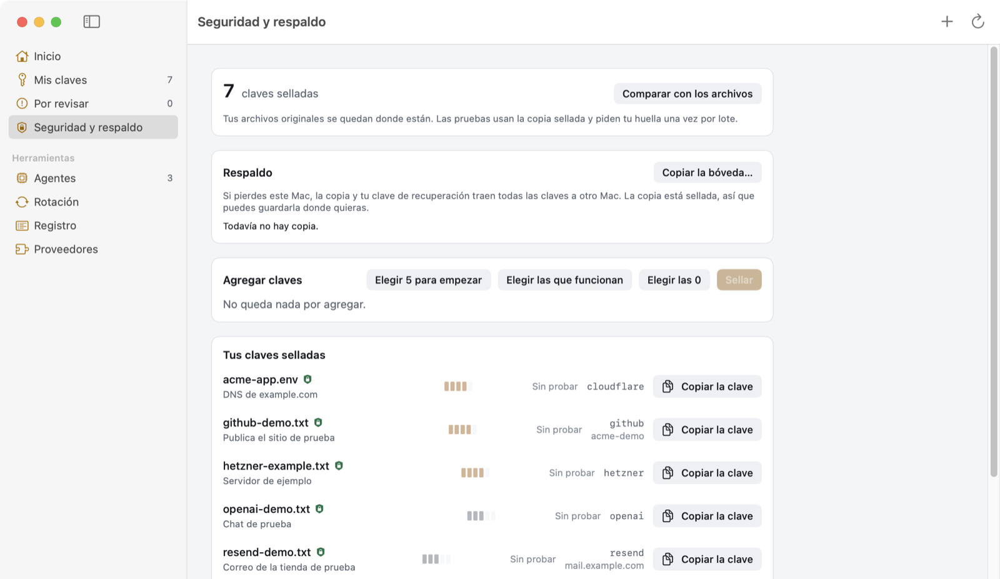

Una bóveda de claves para tu Mac que los agentes usan sin ver las claves
keyreeve sella tus claves de API en tu propio Mac, le pregunta a cada proveedor si siguen funcionando y deja que un agente corra un comando con una clave que nunca tiene en sus manos. Es gratis y de código abierto.

Mis claves. Todos los nombres y valores de estas imágenes son inventados.
Está en etapa temprana. Sellar, probar y dar acceso a agentes se usa a diario en un Mac. La rotación pasa el simulador, pero todavía no ha corrido contra un proveedor real. No hay descargas listas.
Cómo un agente usa una clave sin verla
El agente pide correr un comando con una clave. El comando recibe un reemplazo con la misma forma, y un proxy local pone la clave real solo en las consultas que van a los servidores de ese proveedor.
El cambio se hace en los encabezados y en las contraseñas Basic, y en la dirección solo para un proveedor que recibe ahí su clave, como Telegram. El cuerpo de la consulta conserva el reemplazo, así que una herramienta que manda su clave en el cuerpo falla y no filtra nada.
Qué ven los agentes
Tú eliges qué claves pueden conocer los agentes. Las demás no existen para ellos.

La página de una clave, pestaña Uso: ofrecida a los agentes, con el nivel Preguntar.
Quién decide
Cada clave ofrecida tiene un nivel, y solo tú lo eliges, en la app. Tu huella es la respuesta.
Cerrar Keyreeve, o Bloquear todo en la barra de menú, termina todos los permisos de una vez. Cada sí, cada no y cada rechazo queda en un registro con el motivo que dio el agente.

Agentes: qué puede usar cada agente, y cómo.
Los agentes se conectan por MCP con keyreeve-vault mcp. Tienen list_keys, use_key, request_access, run_with_key y rotate_key, y mientras tú lo permitas, inventory y propose para ayudar a ordenar una carpeta de claves sueltas. Ninguna entrega un valor.

Seguridad y respaldo. Cada clave sellada es un archivo age estándar, así que puedes abrirla sin keyreeve.
Instalar
Necesitas macOS 14 o más nuevo, las Command Line Tools y Rust. La compilación no está notarizada, así que macOS te avisa la primera vez.
git clone https://github.com/carlostapiacl/keyreeve
cd keyreeve
app/build-app.sh
ditto app/dist/Keyreeve.app /Applications/Keyreeve.app
open /Applications/Keyreeve.app
Después de la primera copia, cada vez que corres build-app.sh se actualiza la de Aplicaciones, y Keyreeve se vuelve a abrir si estaba abierto.
Recetas
Todo lo que keyreeve sabe de un proveedor está en un archivo YAML, y la app no conoce a ningún proveedor por su nombre. Una receta es solo datos y no puede correr código. Habla por HTTPS solo con los servidores que declara. keyreeve trae 33 recetas, y lo que más sirve es una para un proveedor que uses.
Seguridad
keyreeve cuida claves. No es un sandbox: un programa que corre con tu usuario puede hacer lo mismo que tú. El código de la bóveda no ha tenido revisión externa. El modelo de amenazas, en inglés, dice de qué protege y de qué no. Para reportar una vulnerabilidad, usa el reporte privado.
Para leer más
README: los primeros cinco minutos, los niveles y las herramientas para agentes.
Referencia: la bóveda desde una terminal, keys.toml, claves SSH, recetas y rotación.